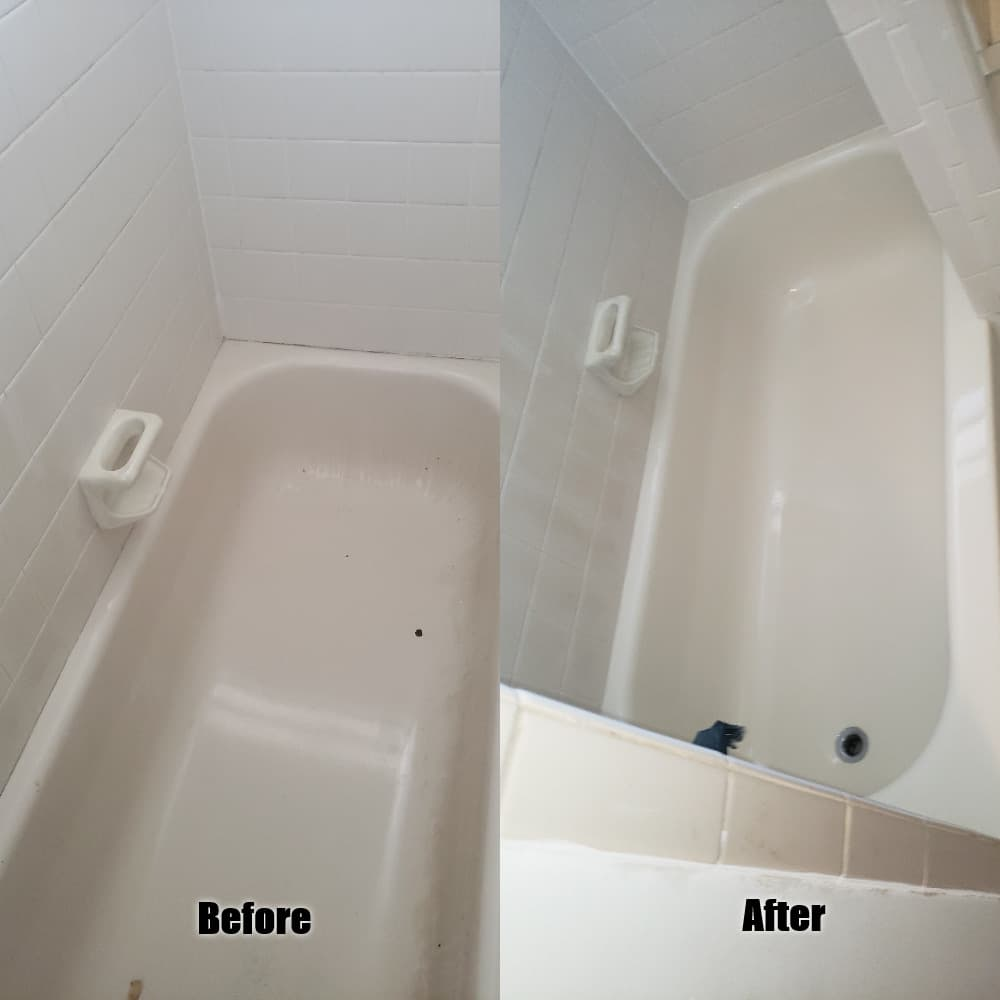

<section id="about" class="about">
    <div class="container" data-aos="fade-up">

        <div class="section-title">
            <h2>Bathtube Refinishing</h2>
            <p>Bathtub refinishing also known as bathtub re-glazing, bathtub restoration or bathtub resurfacing is a
                procedure that comes in very handy when the bathtub starts showing signs of deterioration, is ugly or
                simply has an undesired color.</p>
        </div>

        <div class="row">
            <div class="col-lg-6" data-aos="fade-right">
                
            </div>
            <div class="col-lg-6 pt-4 pt-lg-0 content text-justify" data-aos="fade-left">
                <h3>Why you should refinish a bathtube?.</h3>
                <ul>
                    <li><i class="bi bi-check-circle"></i> Refinishing a bathtub is typically the most inexpensive and
                        the least time consuming option above all the others available: liner or conventional
                        remodeling. The average tub replacement cost varies between $1,500 and $3,500 since it is a
                        process that involves demolition of walls and floors, debris disposal, drywalling, tile
                        installation, plumbing, etc., with all the costs of labor associated with it. </li>

                    <li><i class="bi bi-check-circle"></i> Days or even weeks of hassles and stress saved, by allowing
                        the homeowner to avoid a major project that involves several people doing plumbing, ripping out
                        walls and creating dusts and debris.
                    </li>
                    <li><i class="bi bi-check-circle"></i> A bathtub that was painted or refinished before can be
                        re-glazed again. It doesn’t even matter if low quality products were used because we will strip
                        the old material completely to make sure we work on the original surface to obtain a proper
                        adhesion..</li>
                </ul>
                <p>
                    Very frequently our customers, besides the bathtub restoration, ask us to refinish the tiles around
                    the tub as well or to even refinish the other tiled walls in the rest of the bathroom. This service
                    is called tile refinishing or bathroom refinishing and in a matter of hours allows us to change
                    faded or outdated colors, repair cracked tiles, restore holes among other issues.
                </p>
            </div>
        </div>

    </div>
</section>